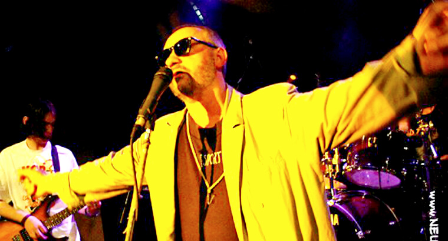

본 자료(정보)는 로스콤스보보다(Roskomsvoboda)의 외국인 대행자에 의해 생성, 배포 및(또는) 전송되었거나 외국인 대행자 "로스콤스보보다"의 활동과 관련이 있습니다. 18+
프스코프(Pskov) 내무부 극단주의 대응국(센터 E)은 모스크바의 한 비영리 단체의 고발에 따라 록 그룹 '생존 지침(Instructions for Survival)'의 리더 로만 네우모예프(Roman Neumoyev)를 소환했습니다.
올해 2월 초, 록 뮤지션이자 시인, 작가인 로만 네우모예프는 자신의 페이스북 게시물을 통해 다음과 같이 밝혔습니다.
"오늘 프스코프 '센터 E'에서 전화가 왔다. 대화를 위해 부른다고 한다! 내가 직접 가진 않을 것이다! 소환장을 보내라고 해라! 그때 잡히면 어쩔 수 없이 '면담'을 해야겠지만."
"프스코프 센터 E 직원은 여전히 만남을 고집하고 있으며, 내 노래와 음악, 영상의 모든 '스크린샷'을 이미 깔끔하게 정리해 두었다고 한다. 월요일이면 이 사건이 법적 조항에 걸릴지 아닐지 판가름 날 것이다. 나를 위해 기도해 달라! 월요일에 기소 내용이 제시될 수도 있고, 아직 공식적인 기소는 아닐 수도 있다."
로만 블라디미로비치 네우모예프는 1986년부터 튜멘의 록 밴드 '생존 지침'을 이끌어온 러시아의 록 뮤지션이자 사진작가입니다. 이 그룹은 예고르 레토프(Yegor Letov) 및 그룹 '민방위(Civil Defense)'와 활발히 협력하며 여러 합동 프로젝트를 녹음했습니다. 1988년부터 네우모예프는 정교회 그리스도교, 러시아 애국주의, 군주제 이상을 작품에 담아왔으나, 2014년 크렘린의 행보를 비판했습니다. 현재는 프스코프에 거주 중입니다.
수사 기관이 그에게 관심을 가진 것은 이번이 처음이 아닙니다. 80년대 지하 록 뮤지션들이 대개 그러했듯 구소련 시절부터 주목을 받아왔습니다. 러시아 펑크 록계에서 그는 시베리아 록에 기여한 전설적인 인물로 평가받습니다.
네우모예프가 언급했듯, 센터 E가 그에게 관심을 보인 것은 한 비영리 단체의 고발 때문이었으며, 이는 변호사를 통해 확인되었습니다.
"모스크바에 본부를 둔 '적법성 및 정치적 항의 연구 센터'라는 특정 비영리 단체가 소셜 미디어에서 금지된 극단주의 자료를 탐지하는 프로그램을 운영하고 있습니다. 이 단체는 탐지된 정보를 지역 수사 기관에 제공하며, 로만 네우모예프도 이 명단에 포함되었습니다."
네우모예프의 페이지에서는 "무슬림들이여 어디에 있는가!!! 지하드의 부러진 날개"라는 제목의 영상이 발견되었습니다. 이와 유사한 제목의 영상은 2015년 9월 25일 군사법원 판결에 의해 연방 극단주의 자료 목록에 추가된 바 있습니다. 변호사는 행정법 위반(극단주의 자료 제작 및 배포) 혐의로 처리될 가능성을 시사했으나, 경찰 측은 "유사한 자료가 많이 발견될 경우 형사 책임이 따를 수 있다"고 경고했습니다.
해당 비영리 단체는 '라플라스의 악마(Laplace Demon)'라는 프로그램을 통해 소셜 네트워크를 24시간 모니터링하며 데이터를 수사 기관에 보내고 있습니다.
네우모예프 외에도 최근 수사 기관이 인터넷 게시물을 문제 삼은 사례는 다음과 같습니다.
- 에코 모스크바(Echo of Moscow): 작년 7월, 피온트코프스키의 기사가 러시아의 영토 보전 원칙을 위반했다는 이유로 편집국이 압수수색을 당했습니다.
- 안톤 노시크(Anton Nosik): 2016년 10월, 시리아 상황에 대한 블로그 게시물로 인해 증오 조장 혐의(형법 282조)로 벌금 50만 루블을 선고받았습니다.
- 콘스탄틴 보로보이(Konstantin Borovoy): 라디오 방송 중 시리아 전쟁과 관련해 대통령을 비판한 발언이 극단주의라는 신고를 받았습니다.
- 비아체슬라프 말체프(Vyacheslav Maltsev): 방송 중 발언으로 인해 '위대한 조국당' 관계자로부터 고발당해 심리 언어학적 조사를 받았습니다.
현재 러시아에서는 수사 기관의 '실적 쌓기'뿐만 아니라 고발(밀고) 문화가 확산되고 있습니다. 정치적 반대자를 공격해 홍보 효과를 누리려는 이들이나, 국가에 '감시 서비스'를 판매하려는 단체들이 이러한 흐름을 주도하고 있습니다. 당국 역시 '불고지죄' 신설 등을 통해 이러한 추세를 독려하는 모양새입니다.
관련 읽을거리:
- 러시아 루넷(Runet) 내 권리 침해 사례 연간 10만 건 돌파
- 유리 셰브추크, 정치적 검열을 가한 전 주지사와의 소송에서 승소
- 인터넷 게시물로 인한 구속 사례 증가
- 그룹 '크로보스톡(Krovostok)', 작품 금지 처분에 대한 항소 승소
태그: #형법282조 #극단주의 #음악 #극단주의자료 #고발 #센터E #러시아록 #리포스트 #펑크
지원 안내 로스콤스보보다의 기술적, 법률적, 분석적 활동을 지원해주세요. 암호화폐 기부도 가능합니다.
뉴스레터 구독 법률 분야의 주간 핵심 뉴스를 전해드립니다.
연락처
- 일반 문의: roskomsvoboda@rublacklist.net
- 법률 문의: legal@roskomsvoboda.org
- 미디어 연락: Telegram (@moi_fee)
공지 (18+) 2022년 12월 23일, 러시아 법무부는 로스콤스보보다를 '외국인 대행자' 명단에 포함했습니다. 우리는 이 결정에 동의하지 않으며 법적 항소를 진행 중입니다.
첨부 한 마디
'극단주의'의 기준이 이렇게 넓어지면, 예술가들은 작품을 만들기 전에 먼저 스스로를 검열하게 됩니다. 마음에 들지 않는 표현과 실제로 위험한 표현은 구분되어야 합니다.
아직 댓글이 없습니다.